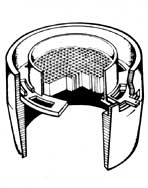
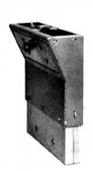
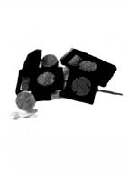
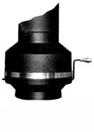
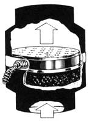
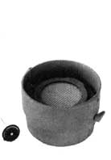
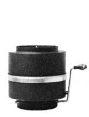
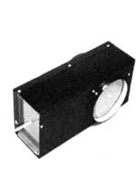
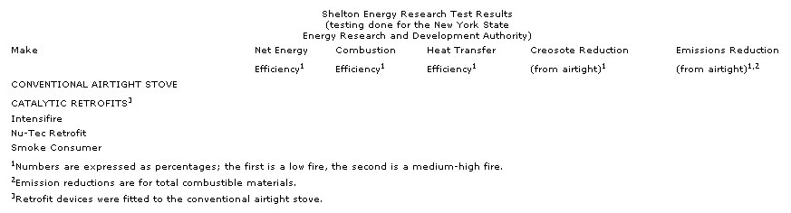

If you'd rather burn the smoke from your stove than clean it from your chimney, look into . . .
In the last issue of MOTHER, we reviewed the progress that's being made toward developing clean-burning, efficient wood stoves. The latest high-tech wood burners use 30% less wood and emit up to 90% fewer pollutants than did the best heaters built only five years ago. However, a lot of us simply don't have roughly $1,000 to lay out for the latest catalytic-converter-equipped wood stove.
Luckily, there is a course of action available that's a great deal more affordable than purchasing a complete new wood stove and that still provides much of the efficiency improvement and emissions reduction made possible by these state-of-the-art combustors. There are, you see, over a half-dozen catalytic retrofit devices on the market today, and test results show that they offer significant performance gains over a plain old airtight heater. If you're in the market for such a device, here are some of the things to look for.
Any retrofit catalyst is a compromise, because the stove that it's installed in was not designed to insure an adequate supply of oxygen and good mixing of the smoke and oxygen at the combustor. Also, add-on catalysts are often positioned farther from active flames than are designed-in units, so the temperature of gases entering them is generally lower. This means that the add-on (and particularly the external) catalyst may be reluctant to "light off" at the beginning of a burn or after refueling.
Catalyst retrofits that are positioned inside the firebox offer some obvious advantages. (MOTHER presented plans for a build-ityourself model on page 162 of issue 79; see page 128 for back issue ordering information.) Their close proximity to the burn zone allows them to get into action early and keep working until there's little left but coals. Having the unit too close to the fire can, however, be a liability. If adequate precautions aren't taken to prevent flames from reaching the ceramic monolith, thermal shock can quickly destroy the catalyst: There have been reports of combustors that disintegrated after only a few months' use in stoves designed without adequate flame impingement protection. Internal combustors are probably best suited to stoves that are used continuously at low to medium heat outputs.
Many designers, including Robert Vincelwho developed the Riteway internal'and the Uni-Com external catalyst retrofits-have concluded that the stress to the combustor inside a stove isn't generally worth the gains provided by that position. Vincel's Uni-Com uses elaborate mixing geometry to insure good distribution of gases, and is fitted with cast refractory to give the unit thermal mass. The latter measure helps the combustor get through transient cool conditions-such as occur during reloading-without dropping below ignition temperature.
Tests have been done on three retrofit cat alysts by Shelton Energy Research for the New York State Energy Research and Development Authority. The evaluation was limited to one stove design, and Jay Shelton suggests that the numbers shown in the accompanying chart could have been different if a variety of appliances had been used. Specifically, some retrofits add secondary air to insure good oxygenation. This could be an advantage on some heaters and a disadvantage on others. Some combustors are longer than others, and the extra length could improve performance on larger stoves with high flue gas velocities. Furthermore, a number of add-ons are also restrictive (that is, they slow the exhaust gases and reduce the maximum burn rate), which may provide better heat transfer in stoves that are leaky. (Restrictions may also protect the combustor by preventing high burn rates and attendant flame impingement.)
But, whether you choose an internal or external catalyst retrofit, there are operating techniques that can help you get the most out of the device. Catalysts thrive on just those conditions that tend to plug the chimneys of conventional airtights with creosote. Once the catalyst has gone into action, it will work best when the firebox is loaded with fuel, the air controls are adjusted for a low burn, and the fire is allowed to smolder. In fact, those of us at MOTHER who use catalyst stoves have found that little attention needs to be paid to the heater's operation. A typical day consists of jamming the firebox full first thing in the morning and again before going to bed. A 12-hour burn is within easy reach, and the heat output remains quite stable over that period.
Unfortunately, there's only one way to be absolutely sure that the catalyst is working. Despite all the advertisements that show the combustor glowing, this situation only occurs for, at most, a couple of hours during the burn cycle; most of the time, the catalyst is working just fine without emitting any visible radiation. Only a dual-probe thermometer, with one sensor before the combustor and one after, will show with assurance whether gases are being burned in the catalyst. (Companies that market such devices include Vermont Technology Group, Inc., Morrisville, VT 05661, and Lehman Engineering, P.O. Box 487, Mazomanie, WI 53560.) A surface thermometer will give you a general idea of whether the combustor is generating heat, but will give little clue to the combustor's overall effectiveness. Of course, a reduction in the amount of smoke coming from the chimney is a general indicator of combustor light-off, and heavy build-up of black, shiny or gooey creosote (rather than tan or brown soot) is a sure sign that the catalyst hasn't been working for some time. Don't assume, however, that a properly operating catalytic converter will eliminate creosote. Some material will still accumulate, and chimney maintenance should be a regular part of your routine.
The list of manufacturers of retrofit catalytic converters that accompanies this article includes most, if not all, of the devices that are presently available for universal application. Many stove manufacturers make kits designed specifically for their products (Riteway is one company that offers such a device), and you should check first with the local dealer who handles your brand of heater. Then, if that fails, consider a universal retrofit. You won't regret it!
Applied Ceramics Versagrid
P.O. Box 29664
Atlanta, GA 30359
4041448-6888 (to locate nearest dealer)
External catalytic dampers and cata lytic converter retrofits that fit 6", 7", I and 8" flues. Top or rear exhaust. Catalytic converter kit retails for `$139.95. Five-year limited warranty.
Arden Industries Smoke Genie
P.O. Box 565
Spruce Pine, NC 28777
7041765-4506
An internal catalytic retrofit that mounts in most stoves without internal baffles. Catalytic converter encased in ceramic housing. Sevenyear limited warranty. Retail price is $199.95.
Cat Engineering
Rt. 6, Box 131
Elizabethton, TN 37643
6151282-2929
( to locate nearest dealer)
More than six different models for external and internal retrofit to flue pipes, freestanding stoves with and without internal baffles, top or rear exhaust, and fireplace inserts. Retail from $94.95 to $119.95. Limited warranty on catalyst.
Catalytic Damper Corporation Intensifire
P.O. Box 188
Flint Hill, VA 22627
8001643-5827 or 7031675-3011
T wo external retrofit models: Intensifire 2000 has large combustor and fits 6", 7", and 8" flue pipes. Comes with probe thermometer and fiveyear warranty for $199.95. Intensifire 1000 fits 8" flue pipes (adapters available for others) and has shorter catalyst. Two-year warranty. Retails for $99.95. Adapters for rear exhaust available for either model.
Metal-Fab Smoke Consumer
P.O. Box 1138
Wichita, KS 67201
3161943-2351
( to locate nearest dealer)
Two external models (P9C and P10C) can be top or rear mounted and fit 8" flues. Adapters allow use on 5", 6", or 7" flues also. Stainless steel wire mesh catalytic converter. Limited one-year warranty.
Nu-Tec Incorporated .
P.O. Box 908
East Greenwich, RI 02818
4011822-1782
Internal and external retrofits for freestanding stoves and fireplace inserts. Limited five-year warranty. Top or rear exhaust for 6", 7", or 8" flues. Retail prices from $129.95 to $159.95.
Riteway Uni-Com
C&W Dr.
Bridgewater, VA 22812
70314333030
An external retrofit that fits 8" pipes but which can be adapted to other sizes. For top or rear exhaust. Limited oneyear warranty. Retail price $199.50.
Sotz Retrofit Catalysts
13628S Station Rd.
Columbia Station, OH 44028
80013219892 or 2161236-5021
External retrofits for 6" and 8" flues and for Sotz two-drum stoves. Oneyear limited warranty. Retail (with shipping) $110.97 to $116.97.
|
 |
 |
 |
|
 |
 |
 |
|
 |
 |
 |